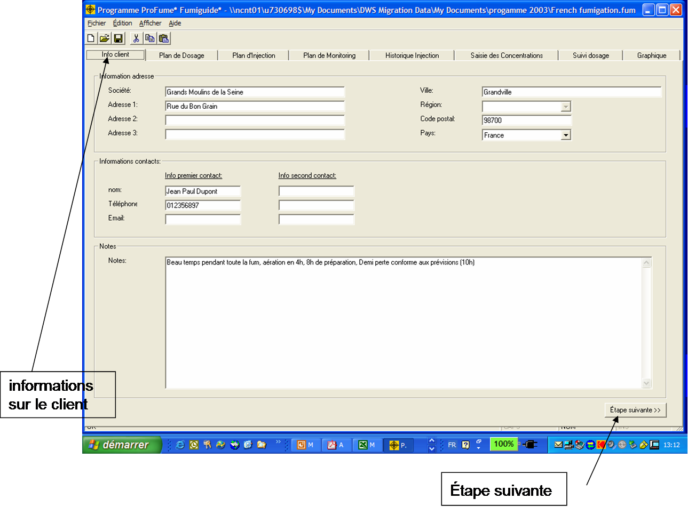

Onglet Info Client
L'ouverture
d'un nouveau fichier du Fumiguide* ProFume* produit une image écran telle que celle-ci. Bien qu'il ne soit pas nécessaire de saisir des informations dans cet onglet Info Client, il est pratique pour stocker l'adresse, les détails de contact et des notes concernant la fumigation. Des notes plutôt longues peuvent être saisies dans la section note et le bas de cet écran, par exemple une installation particulière, des étapes de calfeutrage ou d’information du public. Ces notes seront enregistrées dans le fichier comme référence future.
